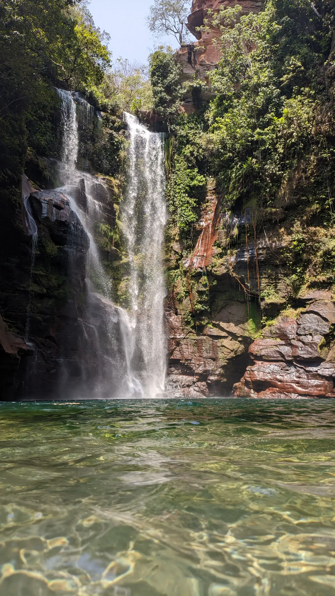

Conheça o lugar

A Cachoeira Azul é um dos atrativos naturais mais conhecidos da região de Barra do Garças, no estado de Mato Grosso. Cercada pela vegetação típica do Cerrado brasileiro, a cachoeira chama atenção pela beleza de suas águas, pelas paisagens naturais preservadas e pelo ambiente tranquilo que atrai turistas e moradores durante todo o ano. O local é bastante procurado por pessoas que desejam contato com a natureza, lazer e momentos de descanso em meio às paisagens naturais da região do Araguaia. O nome “Cachoeira Azul” está relacionado à coloração das águas em determinados períodos do ano, quando a transparência e a iluminação natural criam tons azulados muito admirados pelos visitantes. Esse aspecto se tornou uma das principais características do local e ajuda a transformar a cachoeira em um dos cenários naturais mais fotografados da região. A Cachoeira Azul possui quedas d’água e piscinas naturais utilizadas para banho e recreação. Durante o período de seca, as águas costumam ficar mais cristalinas e o acesso ao local se torna mais fácil para os visitantes. Já durante a época chuvosa, o volume de água aumenta significativamente, deixando a cachoeira ainda mais impressionante e reforçando a beleza natural do ambiente. Além da beleza das águas, o local também oferece um ambiente agradável para famílias e grupos de amigos. Muitas pessoas visitam a cachoeira para relaxar, fazer passeios ecológicos e aproveitar momentos de tranquilidade próximos à natureza. O som das águas correntes e a presença da vegetação preservada tornam o ambiente bastante procurado para descanso e lazer.
A região da Cachoeira Azul também possui pequenas trilhas ecológicas utilizadas pelos visitantes para explorar as áreas naturais ao redor. Essas trilhas permitem maior contato com a fauna e a flora do Cerrado brasileiro, além de proporcionarem belas paisagens naturais durante o percurso. Outro destaque da cachoeira é sua proximidade com outros pontos turísticos importantes de Barra do Garças, especialmente atrações ligadas ao Parque Estadual da Serra Azul. Isso faz com que muitos turistas incluam a cachoeira em roteiros de ecoturismo pela região do Araguaia, visitando diferentes atrações naturais durante a mesma viagem. A área ao redor da cachoeira abriga diversas espécies típicas do Cerrado, incluindo aves silvestres, pequenos animais e plantas nativas da região. A preservação ambiental do local é considerada importante para manter o equilíbrio ecológico e conservar os recursos naturais existentes na área. Além do turismo e do lazer, a Cachoeira Azul também contribui para fortalecer o turismo regional e divulgar as belezas naturais de Barra do Garças. O aumento do número de visitantes ajuda a movimentar o comércio local e reforça a importância do turismo ecológico para a economia da região.
A melhor época para visitar a Cachoeira Azul costuma ser durante o período de seca, entre os meses de maio e setembro, quando as trilhas ficam mais acessíveis e as águas apresentam maior transparência. Nesse período, as condições para banho, caminhadas e atividades ao ar livre se tornam mais favoráveis para os visitantes. Muitas pessoas também procuram o local para fotografar as paisagens naturais e registrar momentos em meio à natureza. O cenário formado pelas águas azuladas, pelas pedras e pela vegetação preservada faz da cachoeira um dos lugares mais bonitos e visitados da região do Araguaia. A Cachoeira Azul representa uma das várias atrações naturais que ajudam a destacar Barra do Garças como um importante destino turístico do estado de Mato Grosso. A combinação entre natureza preservada, águas cristalinas, lazer e tranquilidade transforma o local em uma experiência bastante procurada por visitantes de diferentes regiões do Brasil. Além de toda a beleza natural e da importância turística para Barra do Garças, a Cachoeira Azul possui localização acessível para visitantes que desejam conhecer um dos cenários naturais mais famosos da região. O local oferece uma experiência de contato direto com a natureza e reforça a importância da preservação ambiental das paisagens naturais do Cerrado mato-grossense.
As condições de acesso, funcionamento, valores e regras podem mudar. Confirme as informações com responsáveis ou órgãos locais antes de realizar o passeio.